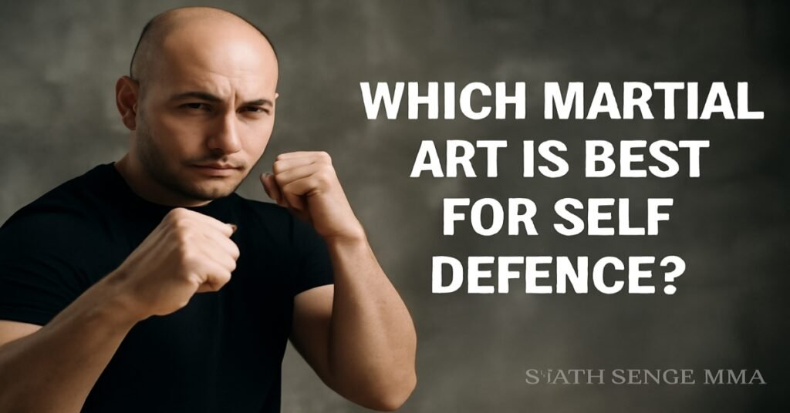
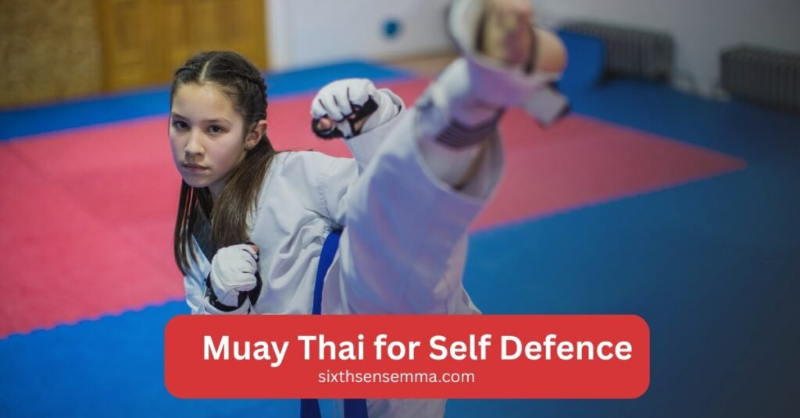
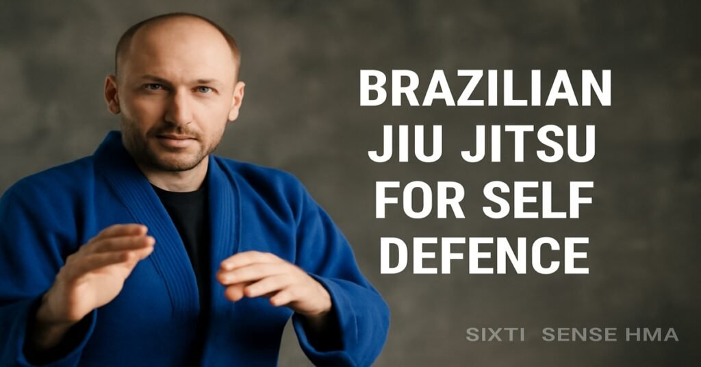

Which Martial Art is Best for Self-Defence?

Which Martial Art is Best for Self-Defence? When it comes to protecting yourself in a dangerous situation, knowing the best martial art for Self Defence is key. With so many styles out there, you may feel overwhelmed choosing the right one.
Some martial arts focus on striking, others on grappling or submissions.What makes one better than the other for Self Defence depends on the type of situation you’re in. Whether it’s defending yourself against a single attacker or multiple threats, the best martial art for self defense can make all the difference.
Self Defence goes beyond just physical techniques. It involves building confidence, improving your awareness and learning how to stay calm under pressure. Different martial arts teach these skills in different ways and some might be more suited to certain situations than others. That’s why it’s crucial to consider your personal needs, whether it’s for street Self- Defence or simply learning to protect yourself. The right martial art not only prepares you physically but also mentally for real world scenarios.
Top Martial Arts Styles for Self Defence
which martial art is best for self-defence When choosing the best martial art for Self -Defence, it’s important to understand the strengths of each style. Here’s a quick look at some popular martial arts and how they can help you protect yourself in real life situations. Muay Thai This martial art focuses on striking with elbows, knees, kicks and punches, making it effective for self defense. This “art of eight limbs” is ideal for close combat, making it a great choice when you need to defend against an attacker in a street fight.
Brazilian Jiu Jitsu (BJJ) is a grappling based martial art that teaches you how to defend yourself on the ground. It is particularly effective against larger opponents because it emphasizes joint locks and submissions, which allow you to neutralize an attacker without relying on strength. At Sixth Sense MMA, you can learn these martial arts from experienced instructors, combining striking and grappling techniques to give you the best chance in any Self Defence situation.
Muay Thai for Self Defence
Muay Thai, known as the ‘art of eight limbs,’ utilizes punches, kicks, elbows and knees as a striking martial art. Its emphasis on powerful strikes makes it extremely effective for Self Defence, particularly in close quarters situations. Muay Thai teaches you how to defend against and counter attacks, making it ideal for street fights or situations where you need to quickly neutralize an attacker.

At Sixth Sense MMA, Muay Thai classes focus on building both strength and technique. With expert guidance, you’ll learn how to deliver powerful strikes and defend against various types of attacks, giving you the confidence to protect yourself in real world situations.
Brazilian Jiu Jitsu for Self Defence
Brazilian Jiu Jitsu (BJJ) is highly effective in real world Self Defence situations, especially when the fight goes to the ground. It focuses on leverage, submissions and ground control, allowing a smaller person to neutralize a larger attacker. BJJ teaches techniques like joint locks and chokes, which are essential for subduing an opponent without using brute strength.

At Sixth Sense MMA, the Brazilian Jiu Jitsu program is designed to give you hands on experience in realistic Self Defence scenarios. You’ll learn essential techniques to control, escape and submit attackers, preparing you for any ground fighting situation that may arise in an altercation.
Mixed Martial Arts (MMA) for Self Defence
Mixed Martial Arts (MMA) combines various martial arts techniques, including striking, grappling and submissions, making it a comprehensive approach to Self Defence. MMA equips you with the skills to handle any situation, whether you’re standing, clinching, or on the ground. The versatility of MMA allows you to adapt to different types of attacks, making it highly effective in real world confrontations.
At Sixth Sense MMA, our MMA program trains you to handle practical Self Defence scenarios by integrating techniques from Muay Thai, Brazilian Jiu Jitsu and wrestling. The classes focus on real life applications, preparing you for any unexpected situation while also improving your fitness and endurance.
How to Choose the Best Martial Art for Defending Yourself
When choosing the best martial art for Self Defence, several factors should guide your decision. First, consider your personal goals whether you’re looking for fitness, confidence, or specific Self Defence skills.Your fitness level is another important factor, as some martial arts styles require more strength or flexibility than others. Additionally, think about the type of training you prefer, whether it’s striking, grappling, or a combination of both.
Professional guidance and structured training are key to mastering any martial art. Without proper instruction, it’s easy to develop bad habits or miss out on essential techniques. At Sixth Sense MMA, we provide expert coaching in a supportive environment. Our programs are tailored to meet individual needs, ensuring that you receive the right training to build the skills necessary for effective Self Defence.
Practical Tips for Selecting the Right Martial Art for Self Defence
Choosing the right martial art for Self Defence begins with understanding what you want to achieve. If you prefer striking, Muay Thai or boxing might be a great fit, while if you’re looking for grappling and submissions, Brazilian Jiu Jitsu is ideal. Consider your fitness level and comfort with different techniques.
When evaluating training programs, focus on schools that provide real world, practical Self Defence training. Ensure the instructors are experienced and the classes are well structured. At Sixth Sense MMA, we offer a mix of martial arts styles that prepare you for any Self Defence situation, with a strong emphasis on practical techniques.
Why Choose Sixth Sense MMA for Self Defence Training
Choosing the right place to learn Self Defence is crucial and Sixth Sense MMA stands out for its expert instructors and comprehensive training programs. Our classes combine different martial arts styles, ensuring you gain a well rounded skill set for real world scenarios. With a focus on practical techniques, we equip students to handle everything from street fights to multiple attackers.
At Sixth Sense MMA, you’re not just learning Self Defence; you’re building confidence, discipline and fitness. Our supportive community and hands on approach make learning engaging and effective, helping you feel prepared for anything that comes your way.
Benefits:
Martial Arts Benefits for Self Defence
- Physical Benefits of martial arts include improved strength and agility, which are essential for self defense.:
- Build physical strength, flexibility and coordination
- Improve endurance and agility
- Increase your ability to react swiftly in Self Defence situations.
- Mental Benefits:
- Develop mental toughness and discipline
- Learn to stay calm under pressure
- Sharpen focus and awareness of your surroundings
- Boost confidence and decision making skills in high stress situations
- Holistic Self Defence Training at Sixth Sense MMA:
- Focus on both physical and mental preparation.
- Real world application of techniques.
- Build confidence to handle any threat that comes your way.
Physical and Mental Benefits of Martial Arts for Self Defence
- Physical Conditioning:
- Martial arts improve strength, endurance and agility through striking and grappling techniques.
- Physical capability is enhanced, crucial for real world Self Defence scenarios.
- Mental Conditioning:
- Martial arts, such as karate and judo, teach discipline, focus and awareness.
- As you progress, you’ll be able to stay calm in high stress situations and make quick decisions.
- Sixth Sense MMA Programs:
- Designed to build both mental and physical resilience, preparing you to defend yourself in any scenario.
Customer Reviews:
Muntasir Zaman
“Great gym! Came in for a session today and loved the environment and instruction. The head coach Matheus really paid attention to small details and made sure to give everyone adequate time and focus. Excited to come back!”
Isabella Barbosa
“So nice space!! The staff are very friendly. I loved “
Tamires Piol is a dedicated instructor in effective martial arts for self defense.
“Great environment for kids’ Jiu Jitsu and women’s BJJ; the coaches provide excellent self defense training!”
Ameera Abbasi
“I had gone for a free trial session and it was so fun. The instructor taught us very well, especially for this being our first time. It was a good workout and I definitely want to come back regularly!”
FunDadMo
“Great hidden jiu jitsu gym for all ages, perfect for learning self defense techniques.” The teacher is great and really knows the art.”
Ben Holland
“So excited to have a jiu jitsu gym in our neighborhood! This is what Coppell needed!”
Sana Haq
“My kids love their classes. Professional and friendly instructors ensure you learn effective martial arts for self defense. Clean and well lit space.”
Noor Ghaffar
“I’m so happy to see a good mix of guys and girls at the gym. The pricing isn’t too bad.”
Sagar deep singh
“Coach is super awesome. Soft and tough at the same time with kids.”
Shiraz
“Huge facility and very welcoming coach. Great group of people to train with.”
Adnan Sheriff
“A very clean and organized facility with highly skilled coaches who create a friendly environment for all levels.”
Mohammed Shaazuddin
“Friendly staff and coach with a great atmosphere of learning and support.”
Call to Action:
Are you ready to take your Self Defence skills to the next level? Join Sixth Sense MMA today for expert led training in martial arts that will prepare you for real world situations. Don’t wait start your journey towards confidence and safety now.
Conclusion
Choosing the right martial art is crucial when it comes to Self Defence. Whether it’s the striking power of Muay Thai, the grappling techniques of Brazilian Jiu Jitsu, or the effective martial art of Krav Maga, each martial art offers unique benefits for self defense. Mixed Martial Arts (MMA) combines various styles for a comprehensive defence strategy, giving you a well rounded skill set.
If you’re ready to learn self defense and gain the confidence to protect yourself, consider joining a martial art for self defense class. Sixth Sense MMA This is the place to be for self defense training. Our expert instructors and structured training programs are designed to prepare you for real world situations. Join us today and start your journey to becoming more confident and capable.
Follow Us on Social Media
Stay connected with Sixth Sense MMA through our social media channels. Follow us for class updates, training tips, and a closer look at our self defense community.
FAQ’s
There’s no single best martial art. Muay Thai, Brazilian Jiu Jitsu (BJJ), and Mixed Martial Arts (MMA) each offer unique skills. The right choice depends on your needs, whether it’s striking, grappling, or a combination of both.
Yes. Muay Thai is highly effective because it uses punches, kicks, elbows, and knees, giving you powerful tools to neutralize an attacker in close combat.
BJJ is excellent for ground defence. It uses leverage, joint locks, and chokes, allowing even smaller individuals to control larger attackers.
MMA combines striking, grappling, and submissions, making it versatile for real-life situations. It prepares you for stand-up fights, clinches, or ground defence.
Through structured training, you develop mental toughness, discipline, and the ability to stay calm under pressure, boosting your confidence in high-stress situations.
Train with us in Coppell
The first class is free. Shorts, a t-shirt and a water bottle. We lend the rest.
Book a free class